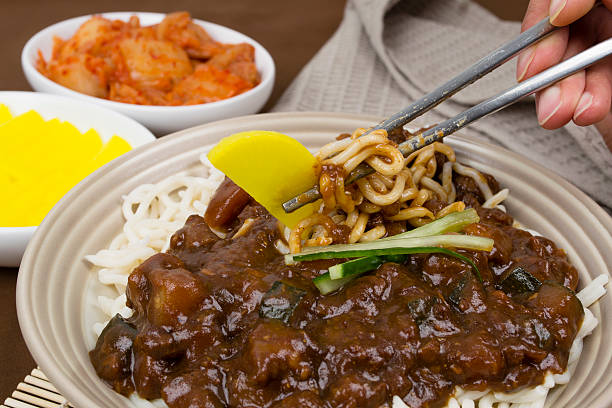

Ingredients
Description
Jjajangmyeon(Noodles in Black Bean Sauce) is a Korean noodle dish topped with black bean sauce made of Chunjang, diced pork and vegetables.Jjajangmyeon is a very delicious and satisfying dish that can be made ready in minutes.